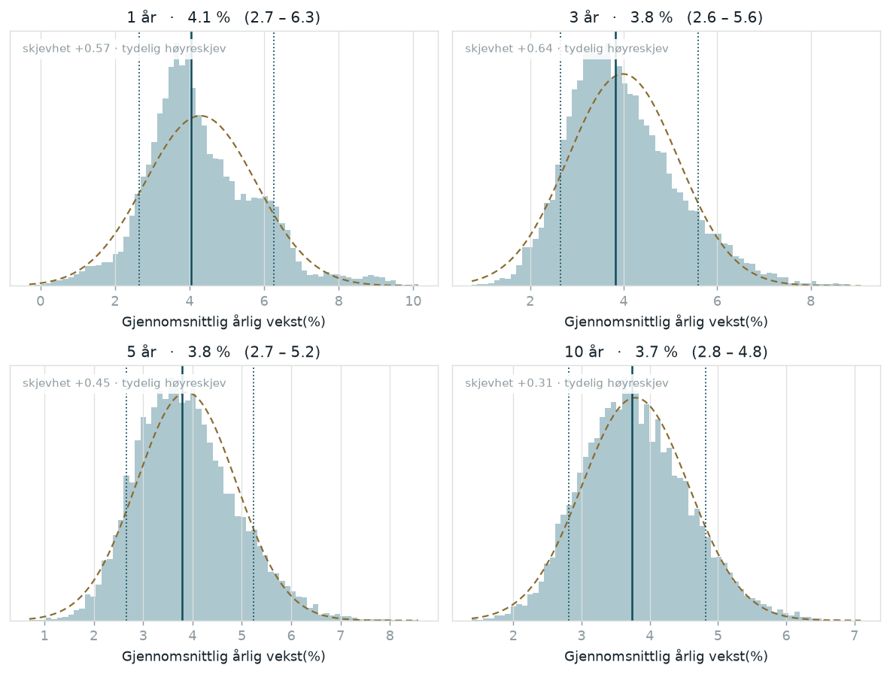
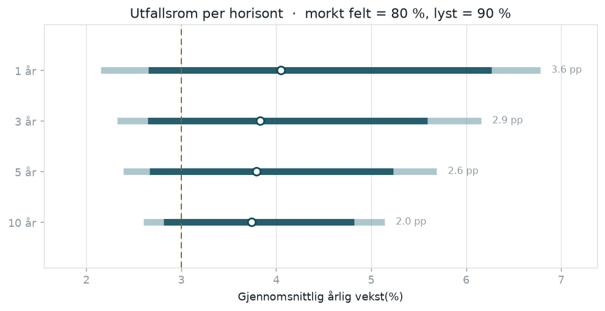
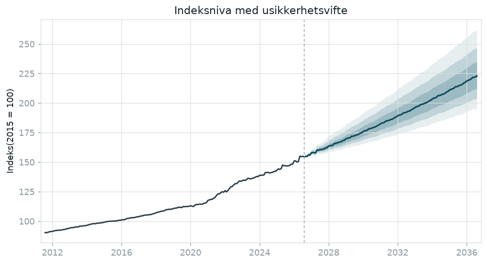
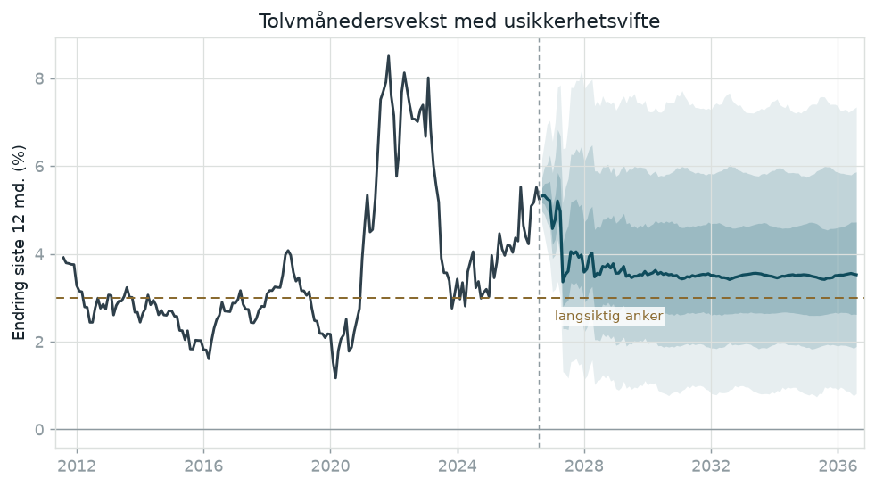
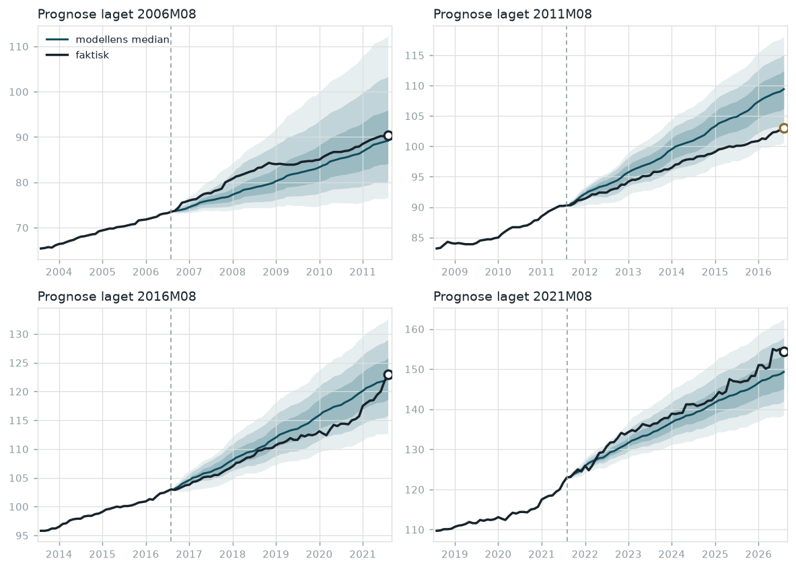
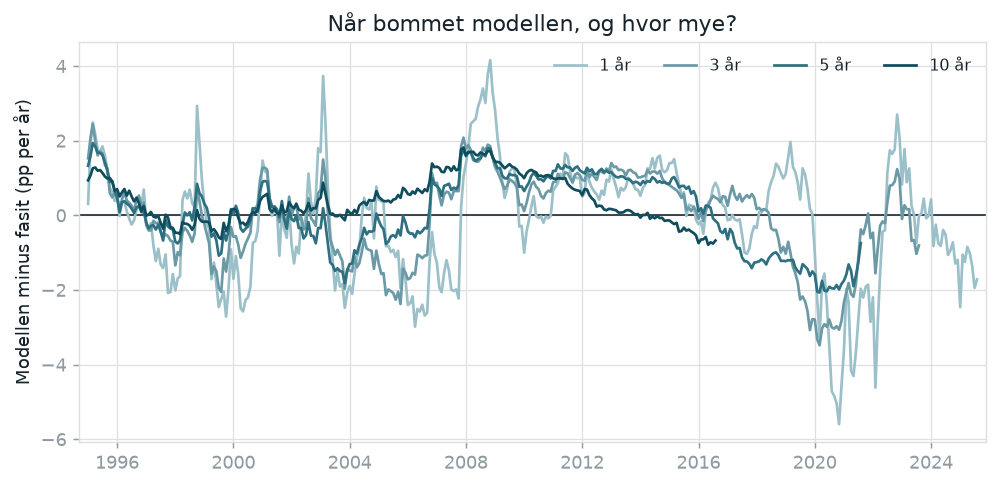
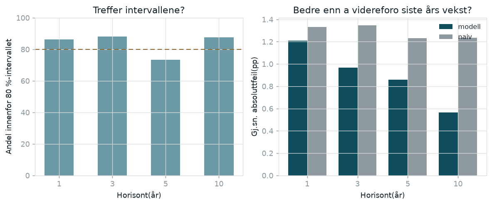

Oppdatert 16.09.2026 · siste observasjon 2026M08 ·
indeks 154,4 · siste 12 md. +5,2 %
Neste år
4,1 %
80 %: 2,7 – 6,3 %
uendret siden forrige måned
Neste 3 år
3,8 %
80 %: 2,6 – 5,6 %
uendret siden forrige måned
Neste 5 år
3,8 %
80 %: 2,7 – 5,2 %
uendret siden forrige måned
Neste 10 år
3,7 %
80 %: 2,8 – 4,8 %
uendret siden forrige måned
Midttallet er medianen. Stolpen viser 80 prosent-intervallet:
ett av ti utfall havner under, ett av ti over.
Slik ser usikkerheten ut
De fire fordelingene under er de simulerte utfallene, ikke en teoretisk kurve.
Den stiplede linjen er en normalfordeling med samme snitt og spredning, lagt
oppa som målestokk. Ligger søylene systematisk til høyre for den, betyr det at
oppsiden er større enn nedsiden.

Heltrukken loddrett strek er medianen, prikkede streker er 10. og
90. persentil.

Hvor bredt utfallsrommet er, målt i prosentpoeng. At spennet smalner
med horisonten er riktig og ikke en feil: usikkerheten i nivaet vokser,
men enkeltars svingninger jevner seg ut nar de deles på flere år. Den stiplede
loddrette linjen er det langsiktige ankeret på 3,0 prosent.
Tall
Horisont
Median
Snitt
P5
P10
P90
P95
Bredde 80
Skjevhet
Form
1 år
4,05
4,29
2,15
2,65
6,27
6,78
3,62
+0,57
tydelig høyreskjev
3 år
3,83
3,99
2,32
2,65
5,59
6,16
2,95
+0,64
tydelig høyreskjev
5 år
3,79
3,88
2,39
2,67
5,23
5,69
2,57
+0,45
tydelig høyreskjev
10 år
3,74
3,79
2,60
2,81
4,82
5,14
2,00
+0,31
tydelig høyreskjev
Alle tall i prosent per år. Skjevhet er null for en perfekt
symmetrisk fordeling.
Bane


Samme simuleringer sett som årlig vekstrate. Legg merke til hvordan
banene trekker mot det langsiktige ankeret etter hvert som dagens
konjunktursituasjon mister betydning.
Ville modellen ha truffet?
Den beste prøven på en prognosemodell er å stille den opp i fortiden med
bind for øynene. I panelene under får modellen bare se data til og med den
stiplede streken, og lager så en prognose 5 år frem.
Den mørke linjen er hva som faktisk skjedde.

Mørk linje er faktisk indeks, blå linje er modellens median, og de
blå feltene er usikkerhetsspennet. Ringen markerer hvor fasiten landet etter
5 år: mørk ring betyr innenfor 80 %-intervallet, brun
ring betyr utenfor.
Tallene bak
Modellen er kjørt på nytt fra 368 startpunkter
gjennom historien. Det faktiske utfallet havnet innenfor 80 %-intervallet i
84 % av tilfellene, og modellen slo den naive regelen
«siste års vekst fortsetter» i 62 %.
Ikke les for mye ut av disse prosentene. Startpunktene ligger én måned fra
hverandre, så nabovinduer deler nesten hele perioden og teller i praksis som
én observasjon. Det bindende taket er hvor mange ikke-overlappende år serien
inneholder — rundt 48 for ettårsanslaget, og bare en håndfull for
tiårsanslaget. Et dekningstall på 89 i stedet for 80 ligger godt innenfor det
tilfeldigheter kan forklare.

Over null betyr at modellen anslo for høyt. Klumper feilene seg
rundt enkeltepisoder, er det konjunkturer modellen ikke kunne vite om. Ligger
de skjevt over lange perioder, er det noe mer systematisk.

Venstre: hvor ofte fasiten havnet innenfor intervallet, mot målet på
80 prosent. Høyre: gjennomsnittlig bomskudd, modell mot naiv regel. Søylene kan
ikke sammenlignes på tvers av horisonter — en tiårssnittvekst svinger naturlig
mindre enn en ettårsvekst, så målskiven er større.
Om modellen
Indeksen måler kostnadene for entreprenørens innsatsfaktorer. Den fanger ikke
endret produktivitet og ikke endringer i entreprenørens fortjenestemargin.
Skal du bruke den som anslag for faktisk byggepris, må du legge på et eget
marginledd.
Månedlig vekst modelleres som langsiktig drift pluss et sesongmønster pluss
en treg avviksprosess. Sesongmonsteret fanger at lønnsdelen hopper nar
tariffoppgjøret slar inn. Avviksprosessen gjør at prognosen tar utgangspunkt
i hvor vi faktisk står i dag.
Usikkerheten har to kilder. Sjokk trekkes i sammenhengende blokker på
18 måneder fra faktiske historiske avvik, slik at simuleringene
arver at urolige perioder kommer i klynger. I tillegg får hver bane sin egen
langsiktige drift, fordi vi ikke vet hva den sanne driften er. Den første
kilden dominerer på kort sikt, den andre på lang.